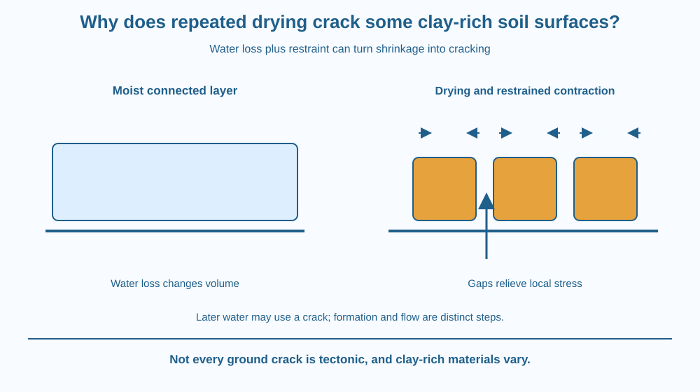

Explain how water loss can make some clay-rich soil shrink and develop cracks. Distinguish desiccation, restrained contraction and structural failure. Connect wetting-drying history with later water pathways without treating every ground crack as an earthquake or every clay soil as identical.
A wet muddy surface dries into a network of gaps. The visible cracks look dramatic, yet no underground fault movement is required. The material between the gaps has changed volume while being constrained by its surroundings.
Why does shrinkage produce separate polygons instead of one perfectly smaller smooth sheet? The surface cannot always contract freely and uniformly. Different regions and contacts resist movement, creating stresses that can open cracks.
This moisture-driven structural process can happen without an earthquake.
Desiccation means drying. As water is lost from a clay-rich soil, particle arrangements and pore-water conditions can change. Some clay minerals and soil structures show substantial shrinkage, a decrease in volume during drying.
Clay-rich does not specify one universal material. Mineral type, organic matter, particle arrangement and starting water content influence behaviour. Some clays are much more expansive and shrinkable than others.
If the soil could contract freely and evenly, it could become smaller with less need to fracture. In a real surface, attachment to underlying material, uneven drying and neighbouring regions can restrain contraction.
Tensile stress can develop when a shrinking region is prevented from moving as it would freely. If the material's resistance is exceeded, a crack can open. The gap relieves some stress and changes how nearby regions continue to shrink.
A network can develop as cracks divide the surface into sections. Its pattern depends on layer thickness, drying conditions, existing flaws and material properties. There is no single polygon shape or crack width that identifies every clay soil.
Wetting can make some shrinkable soils swell again, but cracks and structure need not return to exactly the original condition after each cycle. Repeated wetting and drying can alter pathways and mechanical behaviour.
Cracks can provide larger routes for later water entry. That connection helps explain why a dry cracked clay field may initially admit water differently from an uncracked fine-pored sample. The earlier drainage lesson concerned pore flow; here the main mechanism is how the cracks form through restrained moisture-related shrinkage.
The process is not the same as thermal expansion of a metal rail or tectonic fault movement. A photograph of a ground crack needs context before a cause is assigned. This lesson does not diagnose building damage or suggest a repair for a real site.
Draw a wet layer attached to a base. Put inward arrows on a copy to represent its drying shrinkage tendency. Keep the base connection so not every point can move freely.
Add a gap where the constrained layer separates, then show neighbouring sections becoming smaller. The model makes the connection between contraction tendency, restraint and fracture visible.
Now remove the base attachment in a thought experiment and allow more uniform movement. This comparison shows why volume change alone is not the whole crack explanation. The way movement is constrained matters alongside the amount of water lost.
The SVG shows a wet layer, a drying layer with contraction arrows and a cracked surface divided into sections. A base line represents one possible source of restraint.
A lower inset shows water later entering a pre-existing crack. The arrows distinguish crack formation from the subsequent flow through it. No earthquake motion or atmospheric warming symbols are used.
The diagram is qualitative. It does not provide a real drying time, expansion percentage or building-foundation assessment. Its caption notes variation in clay mineralogy and wetting-drying history.

Some clay-rich Indian soils show pronounced seasonal shrink-swell behaviour. The visible surface can change with moisture history even without a change in the basic mineral particle-size category.
Land managers and engineers may need detailed local measurements where volume change affects structures. A classroom model is not enough to judge a foundation, wall crack or road surface. Those practical problems require appropriate assessment.
Students can use photographs of naturally cracked mud without entering unstable ground or digging. The same photograph may show other processes too, so a careful description separates visible gaps from the inferred drying mechanism.
Use paper and a pencil. No clay handling, dust production or deep ground inspection is needed.
Label the sequence as a mechanism model, not measured soil data. Ask a partner to distinguish formation of a crack from water using it afterwards. The drawing should not imply that every crack requires an earthquake or that all clay-rich materials change volume equally.
Why might the top of a layer drying faster than the lower region contribute to non-uniform strain? Describe the mismatch rather than assuming every part shrinks simultaneously.
Now imagine a previously cracked sample becoming wet again. Why should you avoid promising that its exact original structure is fully restored? The history can leave changes even when some gaps close and the material swells.
What does desiccation mean?
Answer: C — Desiccation is water loss through drying, which can accompany shrinkage in suitable soils.
Why can restraint help a shrinking layer crack?
Answer: A — Prevented or uneven contraction can stress the layer until a gap opens.
Rain reaches a previously dry crack. What role can the crack now play?
Answer: B — The larger gap can transmit water differently from the surrounding fine-pored matrix.
Create a three-stage explanation labelled water loss, restrained shrinkage and crack opening. Include a separate fourth panel for later water flow through the gap.
Write one alternative cause that a real ground-crack photograph might require checking, without diagnosing the site. Your final statement must connect the model to appropriate conditions and avoid an invented universal drying time, width or shrinkage percentage.
A material can crack while trying to become smaller. Restraint turns a volume-change tendency into internal stress, and fracture changes the constraints again. This feedback makes the pattern a record of both the material's drying response and the way its surroundings allowed or resisted movement.
Water loss can shrink some clay-rich soil; restraint and uneven contraction create stress that opens cracks, which can later become preferential water routes.